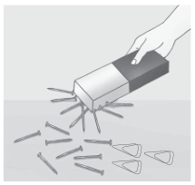

Membuat Magnet dengan Cara Induksi
Membuat magnet selain dengan cara digosok ada juga dengan cara induksi, yaitu mendekatkan magnet permanen yang cukup kuat pada benda yang akan dijadikan magnet. Untuk lebih jelasnya, lakukanlah kegiatan Ayo Coba 2.2 berikut.
Uji Coba 2.2
Tujuan
Membuat magnet dengan cara induksi
Alat dan bahan
Sediakanlah paku besi dan paku baja berukuran 10 cm, magnet batang, dan jepitan kertas
Cara kerja
-
Tempelkan paku besi pada magnet batang, lalu dekatkan paku tersebut pada jepitan kertas. Amatilah peristiwa yang terjadi.
-
Lakukanlah langkah ke-1 di atas pada paku baja. Amatilah yang terjadi.
-
Pisahkanlah kedua paku dari magnet batang. Lalu, dekatkan kedua paku tersebut pada jepitan kertas. Paku yang terbuat dari bahan apakah yang kemagnetannya lebih tahan lama?
Bahan bukan magnet dapat berubah menjadi magnet dengan cara ditempelkan pada magnet permanen yang cukup kuat. Magnet yang terjadi itu disebut magnet induksi. Setelah paku besi dan baja kamu pisahkan dari magnet permanen, ternyata sifat kemagnetan baja akan bertahan lama. Sementara itu, sifat kemagnetan besi akan cepat hilang. Hal ini menunjukkan baja sangat baik untuk dijadikan magnet permanen.
